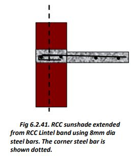
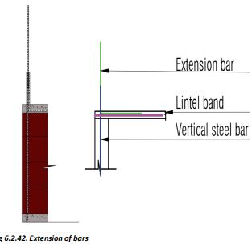
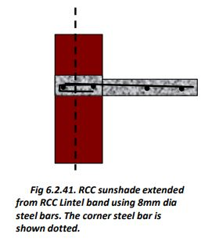
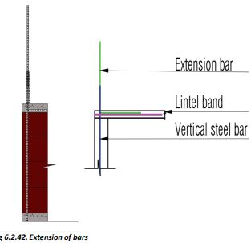

Providing Lintel Band and Sunshades
75 mm thick RCC Bands are provided at plinth, window sill, door lintel, and roof levels. In gable walls, RCC Gable bands are also provided.
• These are important structural elements that bind all the walls horizontally at respective levels and protect them during earthquakes.
• These bands also act as door window lintels. Sunshade projections can be taken out from these RCC bands over door and window openings.
• Vertical steel bars at corners pass through these bands to bind the foundations, walls, and the roof vertically.
• No bars of RCC bands terminate at corners. (Fig.6.2.13.) The bars bend around the corners and go at least 0.5m into the adjacent walls.


Importance of Lintel Band:
1. Structural Support: Distributes load above openings evenly, preventing cracks and ensuring building stability.
2. Earthquake Resistance: Enhances building rigidity, reducing collapse risk in earthquakes.
3. Load Distribution: Distributes load away from openings, preventing localized stress and damage.
Step 11: Lintel Band, Beams, and Sunshades
● At door lintel level provide 200mm x 200 mm size RCC beams to connect the front and back veranda columns to the RCC lintel band.
● At this level also provide RCC landing for the stairs.
● The flights and steps can be of fabricated steel.
● Lay the beams, RCC landing, and the RCC lintel band at the same time. The bars from the lintel band shall go into the beams also.
● Kitchen loft and the top slabs of the shelves in the rooms shall also be provided along with the RCC lintel bands. Shelves can be made using wooden planks or precast RCC slabs later.
● In case the corner bars are short attach extension bars at the RCC bands at sill / lintel level as shown in the given figure.
● Make sure that the vertical corner steel bars are protruding from the lintel band at least 60 cm more than the roof height. If the bars are short, add extension bars as shown in the given figure.
● Provide 450 mm RCC sunshades along with the RCC lintel band as shown.
 



Step 12: Masonry Above Lintel Band
● Continue concrete block masonry work above the Lintel band up to the roof level.
● Provide RCC roof Band just as the Lintel band was provided.
● Make sure that all corner steel bars are protruding vertically at least 600 mm above the Roof band level. Add extension bars from inside the roof band if needed.